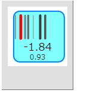
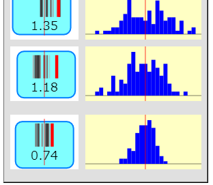
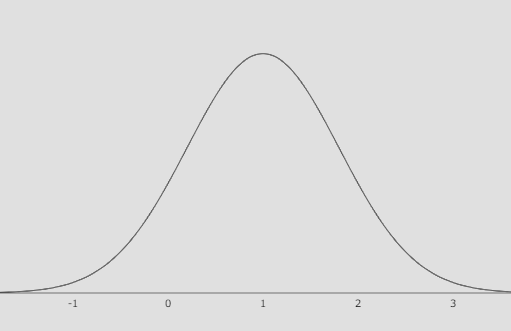
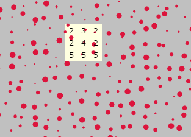

p5.jsによる試作 1
p5.js
p5.jsはJavascriptベースの言語です。次のサイトでアニメーション制作をすることができます。もともとProcessingというプログラミング学習用の言語があり、生成的なアート作品などがプログラミングされていたようです。それを、Javascriptで動くようにしたライブラリがp5.jsらしい。実はProcessingについてはほとんど調べてなかったりします。作品はいくつか見ましたが、いやあ。別世界です。
どういうきっかけでこのサイトに行き着いたのか、今となっては覚えていないのですが、これを使うと、正規分布にしたがう乱数を使ってアニメーションが描けることが分かりました。最初は、ここのリンクにあるWebエディターで、乱数を生成させて表示したりして遊んでいました。おそらく最初に作成したであろうスクリプトがこれです。
"GIFアニメーションではないぷるぷる君
しかし、ダウンロードしてローカルで動かそうとするとうまくいかなかったりする。どうして？ というところから、Javascriptの文法の勉強を始めました。そしてようやく、アニメーションGIFではなく、その場で乱数を生成して、しかもブラウザ上で動くアニメーションができました。もっとも初期の試作品がこれです。ブラウザで動く、というのは私にとってはわりと重要なところで、ダウンロードしてローカルで動かすのは、コンピュータが苦手な人にとってはとてもハードルが高いだろうし、何よりスマートフォンで同じことができるのかわからない。でも、ブラウザなら対応できるだろうと思うのです。

【試作品1】：標準正規分布にしたがう乱数を発生させ、その値を線分の位置に変換して表示します。キャンバス中央が0、横幅が-2.5～2.5です。最も新しい値が赤線、それ以前の値は、より細く薄い線で表示し、10個以上古い値は表示されません。
実際には、ここにたどり着くまでに、最低限必要なp5.jsの文法を覚えることが必要でした。また、正規分布にしたがう乱数をどのように発生させるのか、そして、それをキャンバス上にどのように表示させるのか、など、いくつもの試行錯誤がありました。
進化するぷるぷる君きょうだい
このあと、正規分布を複数並べて表示する、それらの平均値を使って同様の表示を行う、などが試されました。また、発生させた乱数のヒストグラムを描き、新しい乱数が得られるたびにヒストグラムを描き直すようにすることも試されました。こうして、ひとつの到達点になったのが次の試作品です。

【試作品9】：標準正規分布にしたがう乱数を4個発生させ、その平均値を同じ方法でプロットしています。平均値はプロットの幅が狭くなり、より正規分布に近い形になることが視覚的に確かめられます。
宿題の回答
確率変数ぷるぷる君をつくろうの最後に、わたしはこう書いていました。
分散をいじると、ぷるぷる具合が変わるとか、確率分布を入れ替えると、ぷるぷる具合が変わるとか、確率変数をいくつか集めて（1号～5号とか）、その平均を同じようにぷるぷるさせると、なるほど、確率変数の平均は、ちゃんと、分散が小さくなるね！というのを見られたりするとか。
試作品9では、このうちのいくつかを（不完全な形ですが）すでに実装しています。正規分布だけでなく、連続一様分布にしたがう確率変数にも切り替えられるようになっています。確率変数を4つにして、その平均値をぷるぷるさせています。確率変数の平均の分散が小さくなることは、ヒストグラムの形状から明らかです。あとは、これらをもっと見やすくする工夫とか、実際に数値で見せる工夫とか、実装できていない「確率変数の分散の値の変更」に対応するとか、が課題です。
そのほかの試作
これらと並行して、確率密度関数の描画にも挑戦しはじめました。ネットを検索して、正規分布の確率密度を返す関数を調べ、それを用いて正規分布曲線（あの「ベルカーブ」）を描いています。試作品3で、平均値と標準偏差を指定できるようになっています。

【正規分布曲線を描く 試作品3】：正規分布の確率密度を求める関数を使って、正規分布曲線を描いています。プログラム的に言うと、曲線ではなくごく短い直線の連続でしかないのですが、0～1の間を100等分しているので、曲線にしか見えないというわけです。

【サンプリング体験1】：それまで乱数の値を忠実にプロットすることで表現していた確率変数を、単なるドット表現にして、動きも適当な乱数で動かすだけにして、とにかく数だけはたくさん並べました。そして、マウスカーソル周辺の一定数だけを「サンプリング」して平均値を出して、t検定までやっています。